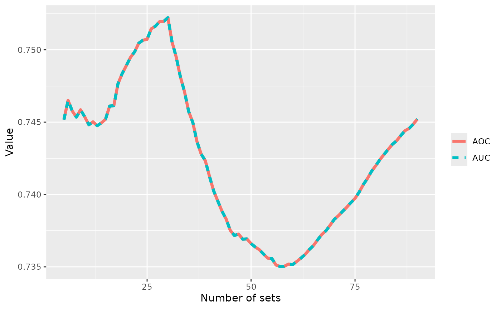

The AUC of the EAF and the AOC (Hypervolume)
The Area-Over-the-Curve (i.e., the hypervolume) of a set of nondominated sets is exactly the Area-Under-the-Curve (AUC) of their corresponding EAF (López-Ibáñez et al. 2025), as this example shows.
library(moocore)
library(tidyr)
library(ggplot2)
extdata_dir <- system.file(package="moocore", "extdata")
A <- read_datasets(file.path(extdata_dir, "ALG_1_dat.xz"))
A[,1:2] <- normalise(A[,1:2], to_range = c(0,1))
aoc <- mean(sapply(split.data.frame(A[,1:2], A[,3]), hypervolume, reference = 1))
eaf_a <- eaf(A[,1:2], A[,3])
eaf_a[,3] <- eaf_a[,3]/100
auc <- hypervolume(eaf_a, reference = c(1,1,0), maximise = c(FALSE,FALSE,TRUE))
nruns <- length(unique(A[,3]))
cat("Runs = ", nruns,
"\nAUC of EAF = ", auc,
"\nMean AOC = ", aoc, "\n")
#> Runs = 90
#> AUC of EAF = 0.7452171
#> Mean AOC = 0.7452171
runs <- 5:nruns
aocs <- c()
aucs <- c()
for (r in runs) {
a <- A[A[,3] <= r, ]
aoc <- mean(sapply(split.data.frame(a[,1:2], a[,3]), hypervolume, reference = 1))
eaf_a <- eaf(a[,1:2], a[,3])
eaf_a[,3] <- eaf_a[,3]/100
auc <- hypervolume(eaf_a, reference = c(1,1,0), maximise = c(FALSE,FALSE,TRUE))
aocs <- c(aocs, aoc)
aucs <- c(aucs, auc)
}
x <- tibble(r = runs, AOC = aocs, AUC=aucs) %>% pivot_longer(-r, names_to = "variable", values_to = "value")
ggplot(x, aes(r, value, color=variable, linetype=variable)) +
geom_line(linewidth=1.5) +
labs(x = "Number of sets", y = "Value", color = "", linetype = "")
References
López-Ibáñez, Manuel, Diederick Vermetten, Johann Dreo, and Carola
Doerr. 2025. “Using the Empirical Attainment Function for
Analyzing Single-Objective Black-Box Optimization Algorithms.”
IEEE Transactions on Evolutionary Computation 29 (5): 1774–82.
https://doi.org/10.1109/TEVC.2024.3462758.